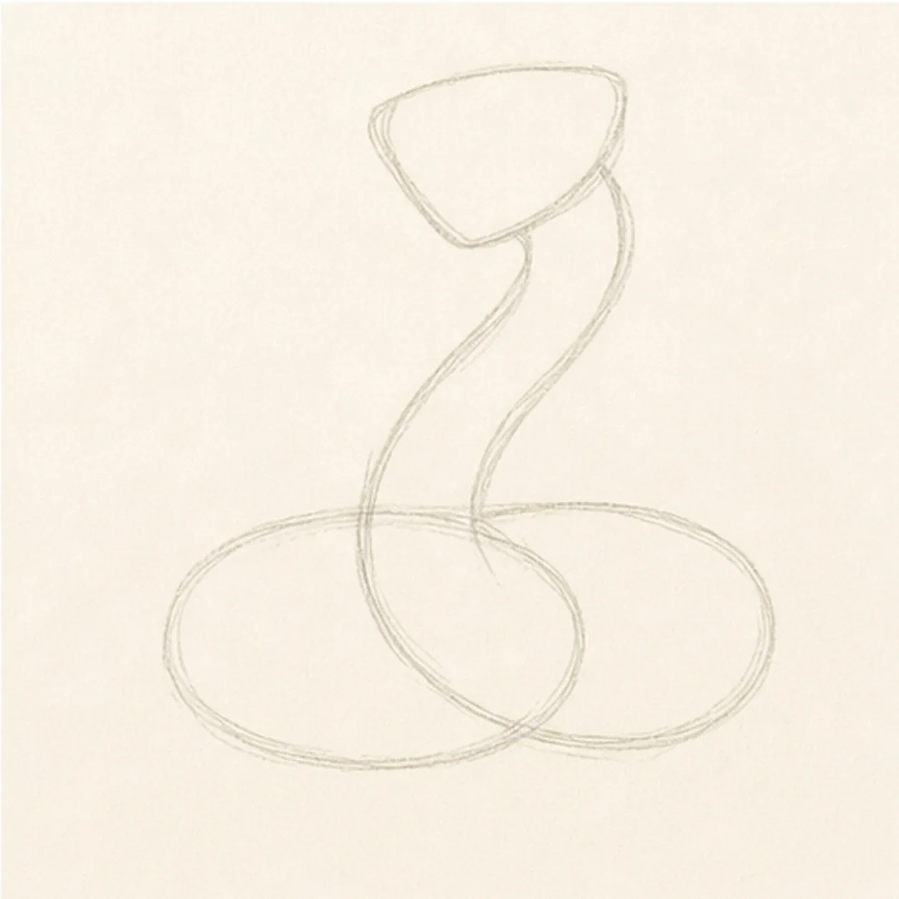
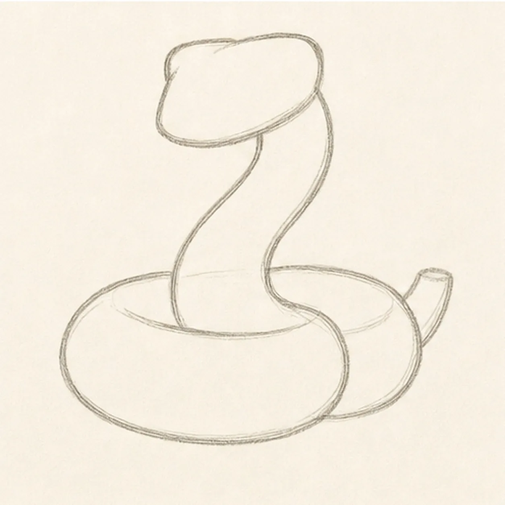
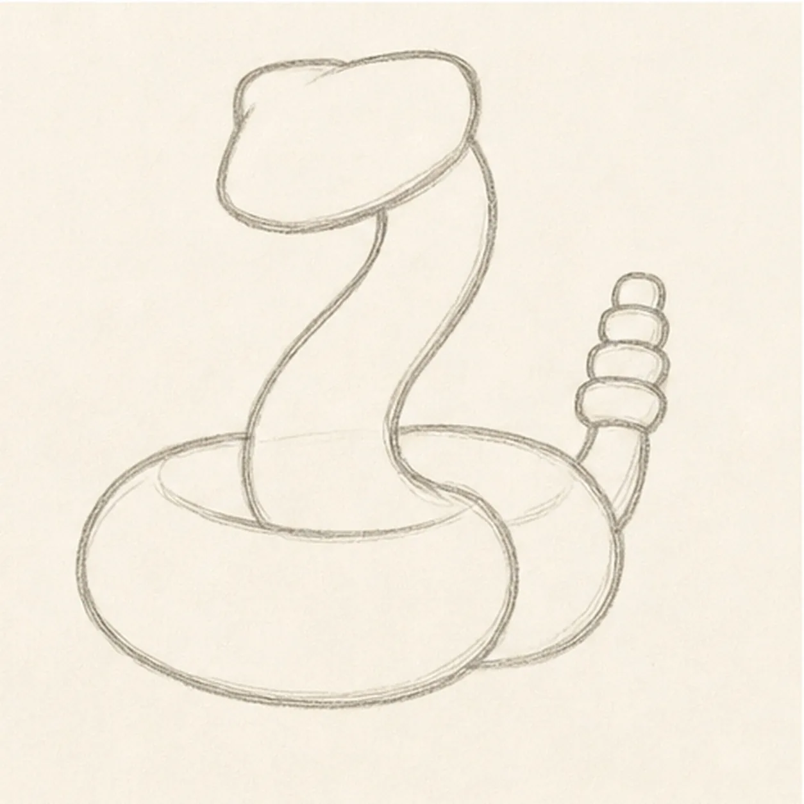
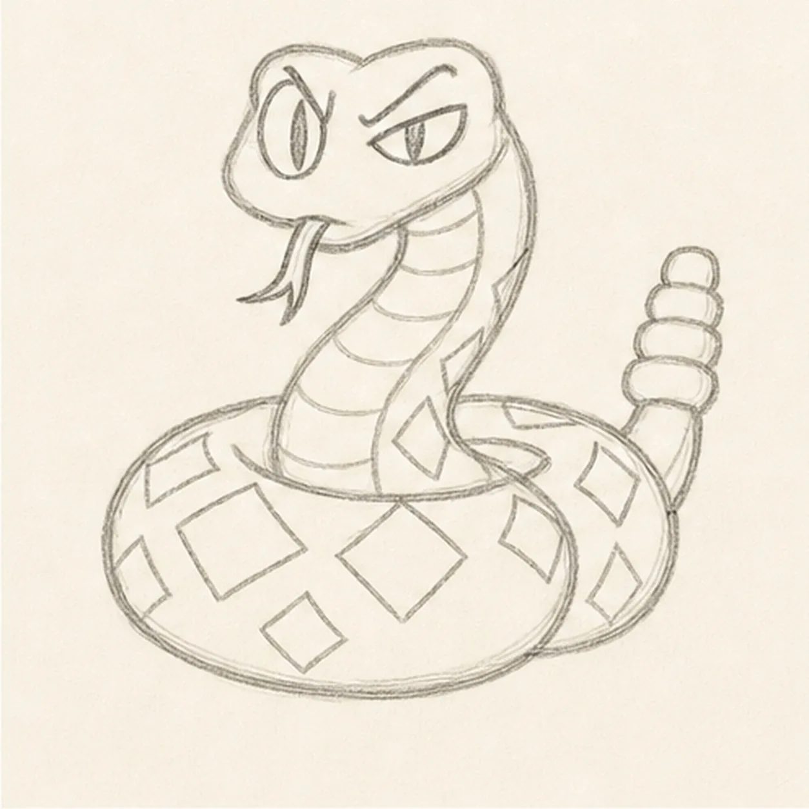
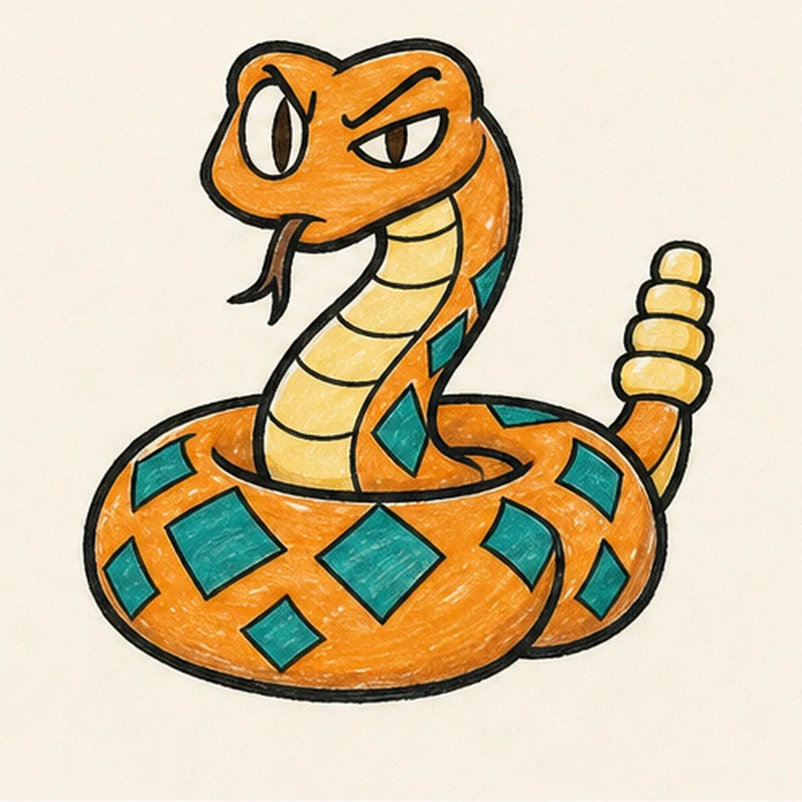

Felt-tip marker mode
Let's draw a cartoon rattlesnake
Treat this as one playful practice round: sketch the idea loosely, simplify the shapes, then commit with confident marker outlines and bright fills.
-
01

Map the coils and rise
Draw two light overlapping coil ellipses, then lift one tall S-curve from their center into a simple head-wedge guide.
Doodle tip: Ghost the S-curve twice before touching down. Keep the two coil ellipses broad and low so the raised neck has room to feel tall.
-
02

Build the snake silhouette
Wrap a thick neck around the S-curve, shape the broad rounded head, trace only the visible coil sections, and set a short tail at the back.
Doodle tip: Choose the front coil once and break the lines behind it. Do not finish body sections that the front loop permanently hides.
-
03

Stack the rattle
Attach four rounded rattle segments to the established tail and clarify the same front-over-back coil breaks.
Doodle tip: Draw the largest rattle segment nearest the tail and taper the stack toward the tip. Compare each open gap before darkening the outlines.
-
04

Aim the alert expression
Add one wide oval eye, one narrow squint, inward brows, slit pupils, and a forked tongue with no smile, then place belly bands and large diamonds on the existing body.
Doodle tip: Set the unequal eye shapes first, then aim both slit pupils forward. The mismatched eyes, angled brows, and tongue carry the attitude without a familiar U-smile.
-
05

Ink and color the coils
Trace the established contours in thick black marker, then fill the body orange, belly and rattle yellow, diamonds teal, and eye accents brown.
Doodle tip: Let each color dry before reinforcing a nearby black edge. Pull marker strokes along the coils so the visible streaks turn with the body.
-
06

Rattle the finish
Strengthen the existing outlines, coil overlaps, expression, rattle segments, patterns, and orange, yellow, teal, and brown fills.
Doodle tip: Check that the forked tongue stays open, the front coil reads first, and exactly four rattle segments remain visible. Stop before adding sand, rocks, cactus, words, or a border.